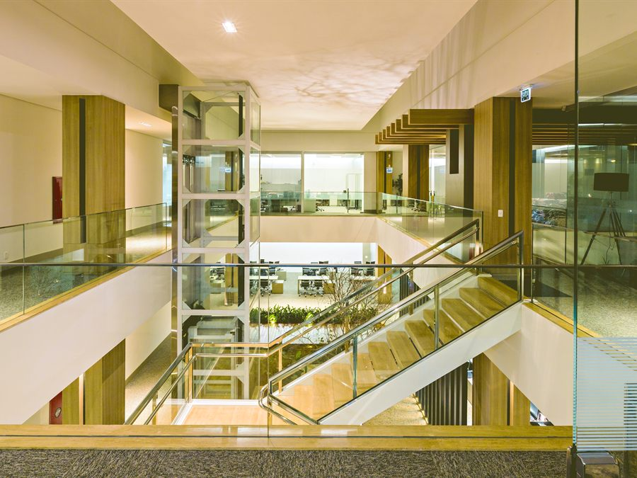

A Solucon é referência técnica em fachadas, esquadrias e sistemas construtivos, combinando indústria e serviço. O crescimento ampliou a complexidade administrativa e tornou a orçamentação um processo intensivo em horas de engenharia.
Diagnóstico estratégico · Processos e Gestão
Processos que sustentam o crescimento da Solucon
Um diagnóstico consultivo para mapear os processos administrativos, tornar a orçamentação mais ágil e liberar a capacidade da engenharia — conectando cada etapa a indicadores de gestão.
Preparado por

Processos que fluem. Orçamentos que priorizam o que converte. Engenharia livre para o que gera valor.
Obras realizadas pela Solucon
A competência técnica já está entregue em obra. Este diagnóstico trata de sustentá-la com processos, orçamentação e indicadores à mesma altura.

Panorama
Onde a Solucon está e para onde pode acelerar
Mapear e padronizar os processos administrativos, priorizar os orçamentos pelo potencial de conversão e liberar a capacidade da engenharia para o que gera mais valor.
A Lean atua como integradora e aceleradora — estrutura processos, cria indicadores e implanta rotina de gestão, sem substituir os controles e a competência técnica que a Solucon já domina.
Diagnóstico por frentes
Cinco frentes para estruturar e acelerar a gestão
Do administrativo aos indicadores — cada frente com o que observamos e o que a Lean entrega.
Impacto sistêmico
Da rotina manual à gestão por indicadores
Sequência recomendada
Três fases que se conectam
As fases são encadeadas, sem prazos rígidos por etapa: cada uma avança conforme a maturidade e as prioridades validadas na operação.
Base e mapeamento
- Mapear os processos administrativos e o fluxo de orçamentação
- Entender responsáveis e sistemas em uso (ClickUp)
- Definir os indicadores prioritários
Implantação
- Redesenhar o funil de orçamentos e automatizar etapas
- Estruturar indicadores de horas e ocupação da engenharia
- Implantar os indicadores financeiros e gerenciais
Consolidação e performance
- Implantar a rotina gerencial e acompanhar metas
- Refinar processos com base nos resultados
- Comparar projetos — benchmarking interno
Exemplo do nosso trabalho
Veja um painel que já construímos
Um dashboard gerencial real desenvolvido pela Lean — o tipo de entrega que reúne indicadores de diferentes sistemas em um só lugar, como planejamos para a Solucon.
Abrir dashboard de exemploAcesso de demonstração · login: lean senha: lean2025
Proposta comercial
Uma parceria presencial e próxima
FormatoPresencial
Frequência4 visitas por mês
AcompanhamentoRecorrente e presencial
DespesasJá incluídas
CancelamentoSem multa · aviso de 30 dias
Escopo5 frentes de diagnóstico e implantação
O valor contempla o acompanhamento presencial, a estruturação dos processos, a integração dos sistemas e a construção dos indicadores descritos neste diagnóstico. As despesas de deslocamento já estão incluídas no valor mensal.
Em resumo
Agendar conversa
O que muda com a Lean ao lado da Solucon
Integrar
Os processos administrativos e o fluxo de orçamentação, com informação padronizada e integrada.
Acelerar
A resposta aos orçamentos de maior potencial e a liberação de tempo da engenharia.
Melhorar
A produtividade administrativa e a clareza de gestão, sustentadas por indicadores financeiros.